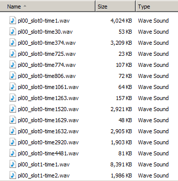

To record in-game voice to wav files, first create a "Voice" directory in your game folder like in this example:
\counter-strike source\cstrike\voice
\team fortress 2\tf\voice
Then in your game console window type: voice_writevoices 1
If all went well after your game is done, your "voice" folder will look something like this:
Open these wave files with your Audio editing program of choice and edit them to your liking. This can be really useful if you are making gameplay videos where you want to separate the voices from all the gameplay sounds. Sometimes you can even play previously recorded demofiles and with this command enabled, you can get voices from them.
I recommend to record both a demofile and put voice_writevoices 1 on at the same time.